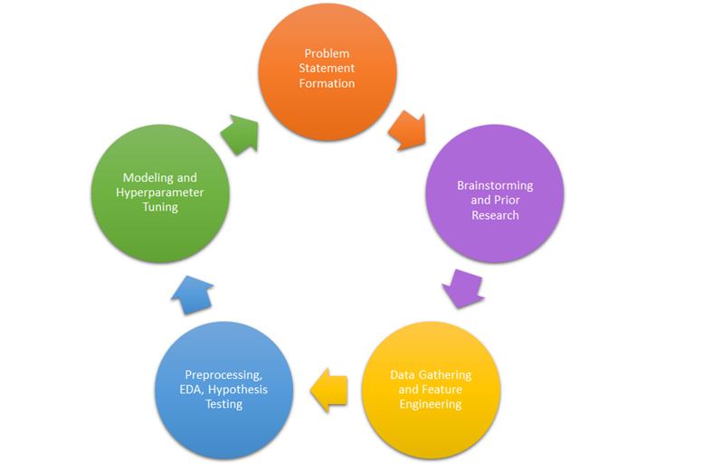
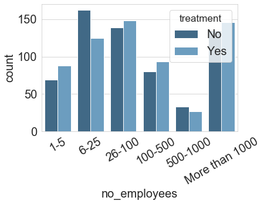

Mental Health Disorders at IT Workspace
By Akhil Kumar Baipaneni & Madhuri Yadav
Agenda
- Introduction
- Architecture
- About our Data
- Preprocessing & Modeling
- Demo
Background
Mental illnesses, such as depression and anxiety, affect people's ability to participate in health-promoting behaviors. In turn, problems with physical health, such as chronic diseases, can have a serious impact on mental health and decrease a person's ability to participate in treatment and recovery.
Problem statement
To identify the strongest predictors of mental health illness & to predict if a person needs mental treatment in the workplace using SageMaker and other AWS services.
Agile Methodology is Followed for This Project
Proposed solution
Machine Learning Workflow
Architecture
Final Model Architecture.
We have used cloudformation template in yaml format to create a cloudformation stack which will automatically deploy and also delete the AWS resources required for the project. So using cloudformation stack, we are creating IAM Roles, S3, VPC, Subnet, Security group, Route table, Internet gateway, Network Interface, Network ACL's, Lambda, Sagemaker Notebook Instance and S3 website hosting.
Network Architecture.
S3 Bucket
S3 bucket is created with public access to store the data and to host the website. The raw data and the output generated is stored in the s3 bucket.
Our Dataset - Mental Health Disorder Survey
The data for this project is taken from one of the Kaggel compititions and the main source for the data is https://osmihelp.org/about/about-osmi OSMI - Open Sourcing Mental Illness is a non profit Corpotation dedicated to raising awarness towards mental health and educating and providing resources to mental health. The data used for this project is from 2014 survey connducted by the organization. The survey measures emploees and employers attitude towards mental health in the IT corporate.
Our data set is as mentioned from 2014 survey has 27 features and 1260 observations. The data description is as below
- Timestamp: Time the survey was submitted
- Age: Respondent age
- Gender: Respondent gender
- Country: Respondent country
- State: If you live in the United States, which state or territory do you live in?
- Self Emplyed: Are you self-employed?
- Family History: Do you have a family history of mental illness?
- Treatment: Have you sought treatment for a mental health condition?
- Work Interfere: If you have a mental health condition, do you feel that it interferes with your work?
- No employees: How many employees does your company or organization have?
- Remote work: Do you work remotely (outside of an office) at least 50% of the time?
- Tech company: Is your employer primarily a tech company/organization?
- Benefits: Does your employer provide mental health benefits?
- Care option: Do you know the options for mental health care your employer provides?
- Wellness program: Has your employer ever discussed mental health as part of an employee wellness program?
- Seek help: Does your employer provide resources to learn more about mental health issues and how to seek help?
- Anonymity: Is your anonymity protected if you choose to take advantage of mental health or substance abuse treatment
- Leave: How easy is it for you to take medical leave for a mental health condition?
- Mental_health_consequence: Do you think that discussing a mental health issue with your employer would have negative consequences?
- Phys_health_consequence: Do you think that discussing a physical health issue with your employer would have negative consequences?
- Coworkers: Would you be willing to discuss a mental health issue with your coworkers?
- Supervisor: Would you be willing to discuss a mental health issue with your direct supervisor(s)?
- Mental_health_interview: Would you bring up a mental health issue with a potential employer in an interview?
- Phys_health_interview: Would you bring up a physical health issue with a potential employer in an interview?
- Mental_vs_physical: Do you feel that your employer takes mental health as seriously as physical health?
- Obs_consequence: Have you heard of or observed negative consequences for coworkers with mental health conditions in your workplace?
- Comments: Any additional notes or comments
Preprocessing & Modeling
The data is stored in data frame from S3 bucket. Data is then devided into 80% & 20% Train and Test respectively. Train data is then devided into 80% & 20% Train and validation respectively.
Unique featurs and data values after preprocessing
- 'Gender': ['male', 'female', 'trans']
- 'self_employed': ['No', 'Yes']
- 'family_history': ['No', 'Yes']
- 'treatment': ['No', 'Yes']
- 'work_interfere': ['Sometimes', nan, 'Never', 'Often', 'Rarely']
- 'no_employees': ['More than 1000', '1-5', '26-100', '6-25', '100-500', '500-1000']
- 'remote_work': ['Yes', 'No']
- 'tech_company': ['Yes', 'No']
- 'benefits': ['No', "Don't know", 'Yes']
- 'care_options': ['Not sure', 'No', 'Yes']
- 'wellness_program': ['No', "Don't know", 'Yes']
- 'seek_help': ['No', "Don't know", 'Yes']
- 'anonymity': ["Don't know", 'Yes', 'No']
- 'leave': ['Very difficult', 'Very easy', "Don't know", 'Somewhat easy', 'Somewhat difficult']
- 'mental_health_consequence': ['Yes', 'Maybe', 'No']
- 'phys_health_consequence': ['Maybe', 'No', 'Yes']
- 'coworkers': ['No', 'Some of them', 'Yes']
- 'supervisor': ['No', 'Yes', 'Some of them']
- 'mental_health_interview': ['No', 'Maybe', 'Yes']
- 'phys_health_interview': ['Maybe', 'Yes', 'No']
- 'mental_vs_physical': ['No', "Don't know", 'Yes']
- 'obs_consequence': ['Yes', 'No']
112 features are the number of features and 796, 200, 249 are the number of observations in respectively in train, valid and test after preprocessing.
EDA
Checking whether data is balanced.
Distribution of people who have taken survey based on their gender
Distribution of both the target classes over gender
Distribution of both the target classes over work interference
Distribution of both the target classes based on occupation
Distribution of both the target classes based on family_history
Distribution of both the target classes based on size of the company
Distribution of both the target classes based on ease with which leave is avalable
Distribution of both the target classes based on whether remote work is avalable
Does your employer takes mental health as seriously as physical health?
As we do not deep analysis by just looking at the data pattern we further perform feature importance using random forest
Checking whether data is balanced.
Hyperparameter Tuning and Model Selection
Models applied
- LogisticRegression
- DecisionTreeClassifier
- RandomForestClassifier
- HistGradientBoostingClassifier
- XGBClassifier
- MLPClassifier
Best Model
The model that worked best for above data was XGBoost below are the results of the model.
After training the model, we will save the model artifacts into AWS S3 for future use. Model artifacts will be contain hyperparameter values of our best model.
- Accuracy Score : 87.55020080321285
- ROC_AUC : 87.5290322580645
- Cohen Kappa: 75.08955368380289